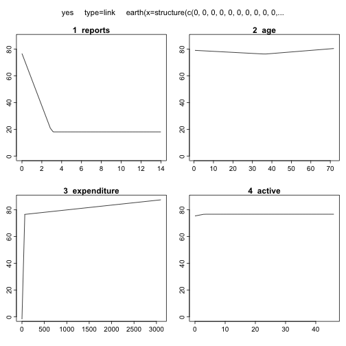

xwMOOC 기계학습
사례 - 카드발급
학습목표
- 계량경제학 신용카드 발급데이터에 예측모형을 적용한다.
- 인간과 조화되는 예측모형을 선정한다.
1. 환경설정 및 데이터 가져오기
Greene, Econometric Analysis, 5th Edition 책에 포함된 신용카드 데이터가 “AER” 팩키지에 들어 있다. 이를 바로 활용한다. 활용되는 팩키지의 각 기능은 다음과 같다.
pscl→ 이항회귀모형에 사용되는 \(R^2\) 결정계수ROCR,pROC→ ROC 곡선 및 AUC 면적dplyr→ 데이터 작업caret→ 예측모형 기본 팩키지
##==============================================================================
## 00. 환경설정
##==============================================================================
suppressMessages(library(doMC))
registerDoMC(cores=7)
suppressMessages(library(AER)) # 카드발급 데이터가 포함됨
suppressMessages(library(pscl)) # 이항회귀분석 R^2
suppressMessages(library(ROCR)) # 모형성능평가
suppressMessages(library(caret))
suppressMessages(library(dplyr))
##==============================================================================
## 01. 데이터 가져오기
##==============================================================================
data(CreditCard)
CreditCard <- as.tbl(CreditCard)
head(CreditCard)# A tibble: 6 x 12
card reports age income share expenditure owner selfemp
<fctr> <dbl> <dbl> <dbl> <dbl> <dbl> <fctr> <fctr>
1 yes 0 37.66667 4.5200 0.033269910 124.983300 yes no
2 yes 0 33.25000 2.4200 0.005216942 9.854167 no no
3 yes 0 33.66667 4.5000 0.004155556 15.000000 yes no
4 yes 0 30.50000 2.5400 0.065213780 137.869200 no no
5 yes 0 32.16667 9.7867 0.067050590 546.503300 yes no
6 yes 0 23.25000 2.5000 0.044438400 91.996670 no no
# ... with 4 more variables: dependents <dbl>, months <dbl>,
# majorcards <dbl>, active <dbl>
| 변수명 | 변수 설명 |
|---|---|
| Cardhldr | Dummy variable, 1 if application for credit card accepted, 0 if not |
| Majordrg | Number of major derogatory reports |
| Age | Age n years plus twelfths of a year |
| Income | Yearly income (divided by 10,000) |
| Exp_Inc | Ratio of monthly credit card expenditure to yearly income |
| Avgexp | Average monthly credit card expenditure |
| Ownrent | 1 if owns their home, 0 if rent |
| Selfempl | 1 if self employed, 0 if not. |
| Depndt | 1 + number of dependents |
| Inc_per | Income divided by number of dependents |
| Cur_add | months living at current address |
| Major | number of major credit cards held |
| Active | number of active credit accounts |
2. 데이터정제
이미 데이터가 정제되어 이항회귀모형을 적합시킬 수 있기 때문에 데이터 정제 작업은 생략하고, 바로 모형개발작업에 들어간다.
3. 모형개발
createDataPartition 함수로 훈련데이터와 검증데이터로 구분한다.
사람이 개입하여 모형을 한땀한땀 개발하는 과정이 아니라, 교차타당도를 기준으로 훈련데이터를 5개 집단으로 나누고, 10번 반복하여 주어진 기준을 가장 잘 만족하는 모형을 선택한다.
- 일반선형모형
- 일반선형모형 부스팅
- MARS
- CART
- 부스팅 나무(Boosted Tree)
- 확률숲(RandomForest)
##==============================================================================
## 03. 모형개발
##==============================================================================
#---------------------------------------------------------
# 3.1. 훈련데이터와 검증데이터 분리
train.id <- createDataPartition(CreditCard$card, p = 0.7)[[1]]
cc.train.df <- CreditCard[ train.id,]
cc.test.df <- CreditCard[-train.id,]
#---------------------------------------------------------
# 3.2. 제어변수 설정
ctrl <- trainControl(method = "repeatedcv",
number = 5,
repeats = 10,
classProbs = TRUE,
summaryFunction = twoClassSummary,
verboseIter = FALSE)
#---------------------------------------------------------
# 3.3. 예측 모형 적용
# glm
glm.tune <- train(card ~ ., data=cc.train.df,
method = "glm",
family = binomial,
metric="ROC",
trControl = ctrl,
tuneLength=5)
# glm boosting
suppressMessages(library(mboost))
glmBoost.tune <- train(card ~ ., data=cc.train.df,
method = "glmboost",
metric="ROC",
trControl = ctrl,
tuneLength=5,
center=TRUE,
family=Binomial(link = c("logit")))Loading required package: plyr
-------------------------------------------------------------------------
You have loaded plyr after dplyr - this is likely to cause problems.
If you need functions from both plyr and dplyr, please load plyr first, then dplyr:
library(plyr); library(dplyr)
-------------------------------------------------------------------------
Attaching package: 'plyr'
The following objects are masked from 'package:dplyr':
arrange, count, desc, failwith, id, mutate, rename, summarise,
summarize
# mars
suppressMessages(library(earth))
mars.tune <- train(card ~ ., data=cc.train.df,
method = "earth",
glm=list(family=binomial),
metric="ROC",
trControl = ctrl,
tuneLength=5)
# CART
cart.tune <- train(card ~ ., data=cc.train.df,
method = "rpart",
metric="ROC",
trControl = ctrl,
tuneLength=5)Loading required package: rpart
# Boosted tree
gbm.tune <- train(card ~ ., data=cc.train.df,
method = "gbm",
metric="ROC",
trControl = ctrl,
verbose=FALSE,
tuneLength=5)Loading required package: gbm
Loading required package: splines
Loaded gbm 2.1.1
# Random Forest
rf.tune <- train(card ~ ., data=cc.train.df,
method = "rf",
metric="ROC",
trControl = ctrl,
verbose=FALSE,
tuneLength=5)Loading required package: randomForest
randomForest 4.6-12
Type rfNews() to see new features/changes/bug fixes.
Attaching package: 'randomForest'
The following object is masked from 'package:dplyr':
combine
The following object is masked from 'package:ggplot2':
margin
4. 모형 성능평가
ROC 기준으로 가장 면적이 넓은 모형을 선정한다. 6개 모형이 성능이 가장 좋아야 하고, 성능이 비슷하다면 단순한 모형을 선정한다. parallelplot() 시각화 도구를 통해 예측모형의 성능을 시각적으로 바로 확인한다.
##==============================================================================
## 04. 모형성능평가
##==============================================================================
allResamples <- resamples(list(MARS = mars.tune,
CART = cart.tune,
"Logistic" = glm.tune,
"GLM Boosting" = glmBoost.tune,
"Boosted Tree" = gbm.tune,
"Random Forest" = rf.tune))
parallelplot(allResamples, metric = "ROC")
5. 최종모형 선정
MARS를 최종모형으로 선정하고, 모형에 대한 자세한 사항을 summary() 함수를 통해 살펴본다. 또한, MARS는 plotmo 기능을 통해 설명변수를 종속변수에 시각적으로 확인도 가능하다.
mars.tuneMultivariate Adaptive Regression Spline
925 samples
11 predictor
2 classes: 'no', 'yes'
No pre-processing
Resampling: Cross-Validated (5 fold, repeated 10 times)
Summary of sample sizes: 740, 740, 739, 740, 741, 741, ...
Resampling results across tuning parameters:
nprune ROC Sens Spec
2 0.9908273 0.9980836 0.9787986
5 0.9947449 0.9975958 0.9797718
8 0.9956892 0.9942393 0.9801913
11 0.9955115 0.9937515 0.9799116
15 0.9955115 0.9937515 0.9799116
Tuning parameter 'degree' was held constant at a value of 1
ROC was used to select the optimal model using the largest value.
The final values used for the model were nprune = 8 and degree = 1.
mars.tune$bestTune nprune degree
3 8 1
summary(mars.tune)Call: earth(x=matrix[925,11], y=factor.object, keepxy=TRUE,
glm=list(family=function.object), degree=1, nprune=8)
GLM coefficients
yes
(Intercept) 3049.88147
h(3-reports) 19.55122
h(36.4167-age) 0.07744
h(age-36.4167) 0.11742
h(expenditure-6.5175) -64.81641
h(53.3017-expenditure) -58.36274
h(expenditure-53.3017) 64.82000
h(3-active) -0.43159
Earth selected 8 of 18 terms, and 4 of 11 predictors
Termination condition: RSq changed by less than 0.001 at 18 terms
Importance: expenditure, reports, age, active, share-unused, ...
Number of terms at each degree of interaction: 1 7 (additive model)
Earth GCV 0.01603614 RSS 14.35625 GRSq 0.908196 RSq 0.9109569
GLM null.deviance 986.0438 (924 dof) deviance 72.36952 (917 dof) iters 24
plotmo(mars.tune$finalModel, type="link") grid: reports age income share expenditure owneryes
0 31.16667 2.97 0.03709175 98.57916 0
selfempyes dependents months majorcards active
0 1 30 1 6
